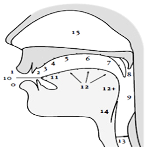

Organs

0
lower lip
1
upper lip
2
upper teeth
3
alveoli
4
postalveoli
5
hard palate
6
pre-velum
7
soft palate (velum)
8
uvula
9
pharynx
10
tip
11
blade
12
front, centre, back
12+
root
13
glottis
14
epiglottis
15
nasal cavity